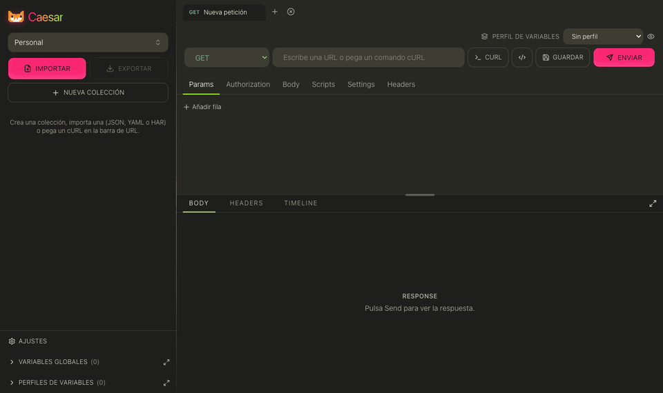

429|Prima di condividere una collezione, Caesar può fare un backup così non perdi nulla.
430|Con il pulsante </> trasformi la richiesta attiva in codice pronto da incollare nel tuo progetto. Ci sono 20 linguaggi e librerie, tra cui cURL, Python (Requests), JavaScript (Fetch, XHR), Node.js (Axios), Go, Rust, Java, Kotlin, C#, PHP, Ruby, PowerShell, Swift e Dart.
431|La stessa richiesta convertita in linguaggi diversi.
434|Carica lo schema tramite introspection.
456|La modalità Guest e gli account senza Pro includono un workspace; con Pro puoi averne quanti ne vuoi.
- 457|Ogni comando di Caesar ha una scorciatoia e puoi cambiarle tutte. Apri l'editor con Ctrl+/.
- 458|Cambia o aggiungi combinazioni; ogni comando ne accetta diverse.
- 459|Azione
- 460|Scorciatoia predefinita
461|Invia la richiesta
435|Autocompletamento di campi e tipi mentre scrivi.
462|Ctrl+Enter
436|Esplora schema per navigare tra tipi e campi.
471|Scegli una variabile
| 322|La velocità di Caesar non è un trucco: nasce da come è costruito. | 323|Rust invece di un browser incorporato |
|---|---|
| 263|Privacy: consulta l'informativa sulla privacy. | 472|Ctrl+Space |
| 473|Apri le impostazioni | 474|Ctrl+, |
| 329|Meno clic, più tastiera | 475|Vedi e modifica le scorciatoie |
| 396|Ctrl+clic su una variabile ne apre il valore per vederlo e modificarlo senza uscire dalla richiesta. | 476|Ctrl+/ |
477|Puoi anche creare azioni personalizzate che concatenano più comandi e mettere i pulsanti che preferisci accanto all'URL.
478|Caesar include sei temi: Monokai (predefinito), Dracula, Tokyo Night, Nord, One Dark e GitHub Light per chi preferisce lo sfondo chiaro.
437|Beautify per formattare la query.
479|Cambia tema all'istante dalle Impostazioni.
- 480|Puoi anche scegliere il font e la dimensione del testo, disattivare le animazioni e regolare la larghezza della barra laterale. L'interfaccia è disponibile in spagnolo, inglese, tedesco, francese e italiano.
- 481|Nelle Impostazioni controlli come vengono inviate le richieste:
- 482|Impostazione
- 483|Cosa fa

485|Segue fino a 10 redirect, oppure nessuno.
438|Genera le variabili dalla query e un selettore di operazione quando ce n'è più di una.
486|Timeout

0 o più di 1 ora si usa il massimo di 3600 s, utile per fare debug senza che scatti l'errore.- 488|Verifica SSL
- 489|Disattivala solo per testare server con certificati autofirmati.
- 490|Versione HTTP
439|Query con autocompletamento e lo schema caricato.
491|Automatica, HTTP/1.1 o HTTP/2.
| 492|Metodi extra | 493|Aggiunge metodi personalizzati oltre a quelli abituali. |
|---|---|
| 494|Con un account Pro puoi usare le stesse collezioni su più computer e condividerle con altre persone. | 495|Sync personale: le tue collezioni, variabili e profili compaiono su tutti i tuoi dispositivi. Le modifiche vengono unite per elemento, così due dispositivi non si sovrascrivono il lavoro a vicenda. |
| 496|Cifrato sul tuo dispositivo: quello che viene caricato è cifrato già dal tuo computer; il servizio memorizza solo dati illeggibili. | 497|Chiave di recupero: la conservi tu, e ti permette di recuperare i tuoi dati se perdi un dispositivo. |
| 498|Collegare un nuovo dispositivo: si approva da un altro dei tuoi dispositivi con un codice a sei cifre che confronti su entrambi gli schermi. | 499|Team: condividi una collezione o un workspace con un codice; chi lo inserisce entra e vede le modifiche. |
| 500|Condividi una collezione con un codice e unisciti da un altro dispositivo. | 501|Importante: in una collezione condivisa, chiunque abbia il codice può leggerne e modificarne il contenuto; non ci sono ruoli. Condividi il codice solo con le persone che devono poter modificare. |
| 191|Oppure cerca “Caesar” nell'Ubuntu App Center (Snap Store). Si aggiorna automaticamente. | 502|Modalità |

504|Guest (gratis)
440|Le richieste GraphQL si importano e si esportano con Postman.
505|Tutte le funzionalità delle richieste, test, GraphQL, WebSocket, import/export e generatore di codice. Dati solo sul tuo dispositivo, 1 workspace.
- 506|Account (prova di 7 giorni)
- 507|Come Guest, in locale, mentre decidi se attivare Pro. Dopo 7 giorni senza Pro, l'account viene eliminato.
- 508|Pro (abbonamento)
509|Sync cifrata, team e collezioni condivise, e workspace illimitati.
510|Prezzo, periodo di fatturazione e tasse vengono mostrati nella pagina di pagamento prima di pagare. Puoi disdire quando vuoi da Impostazioni → Account e abbonamento → Gestisci abbonamento e ottieni il rimborso entro 14 giorni. Maggiori dettagli in Prezzi e abbonamento.
441|Crea una richiesta WebSocket, connettiti e guarda la conversazione in una timeline: cosa invii e cosa ricevi, con orario e dimensione.
511|Nessuna telemetria né analytics. Caesar non invia dati di utilizzo.

513|Le tue chiavi non lasciano mai il sistema: la chiave di cifratura è salvata nel portachiavi del tuo sistema operativo.
442|Connettiti, invia e vedi i messaggi nella timeline.
514|Permessi minimi e una policy di sicurezza rigorosa nell'applicazione.
sudo snap install caesar o l'Ubuntu App Center), Snap lo aggiorna automaticamente; con l'AppImage si aggiorna dentro l'app, e il .deb si reinstalla a mano.520|Usa le variabili per tutto ciò che cambia (server, versione, token) e i profili per ogni ambiente.521|Definisci l'autenticazione sulla collezione e lascia le richieste su "Eredita".522|Aggiungi almeno un test a ogni richiesta importante: stato e un controllo del body.523|Dai alle richieste un nome con un verbo e una risorsa ("Elenca utenti", "Crea ordine") e raggruppale in cartelle.524|Esporta una copia delle tue collezioni importanti ogni tanto.525|Non lasciare segreti nell'URL: usa variabili segrete o l'autenticazione.526|Usa un workspace per progetto o cliente così le variabili non si mescolano.
528|Controlla che l'URL inizi con http:// o https://, che non ci siano variabili non risolte (si vedono con un colore diverso) e che tu abbia una connessione. Guarda la timeline della risposta: ti dice quale passaggio fallisce.
529|Errore del certificato SSL
195|Linux (qualsiasi distro)
530|Se stai testando un server locale con un certificato autofirmato, disattiva Verifica SSL nelle Impostazioni. Riattivala per le API reali.
- 531|Ricevo 401 o 403
- 532|Controlla la scheda Authorization: se è su "Eredita", controlla quella della collezione. Verifica che il token non sia scaduto e che la variabile esista nel profilo attivo.
- 533|La richiesta va in timeout

0 si usa il massimo (1 ora), pensato per il debug.- 535|I miei test non fanno niente
- 536|I test vengono eseguiti dopo aver ricevuto la risposta, quindi devi inviare la richiesta. Se c'è un errore nello script, viene mostrato accanto ai risultati.
- 537|Non riesco a sincronizzare o condividere
- 538|Queste funzionalità richiedono Pro. In modalità Guest o con l'account in prova, Caesar funziona in locale. Se hai già pagato, clicca su Ho già pagato, verifica in Account e abbonamento.
- 539|Caesar va bene per testare le API?
189|Ubuntu (Snap Store)
540|Sì: copre REST, GraphQL e WebSocket con test, variabili, profili, importazione da Postman e generazione di codice, in un'app leggera che funziona offline.
pm.test("responds 200", () => {
pm.expect(pm.response.code).to.equal(200);
});
const data = pm.response.json();
pm.test("returns users", () => {
pm.expect(data.length).to.be.above(0);
});
- 542|È gratis in modalità Guest e il suo codice è pubblico, ma non è open source: usa la licenza FSL e venderlo è vietato. Ogni versione diventa MIT dopo due anni.
- 543|Dove vengono salvate le mie collezioni?
- 544|Sul tuo dispositivo. Lo lasciano solo se attivi la sync o condividi con un team, e in quel caso sono cifrate.
545|Posso portare le mie collezioni di Postman?
443|Scrivi l'URL con ws:// o wss:// (se usi http(s), viene convertito).
546|Sì. Importa il file della collezione (e gli environment, che diventano profili) dalla barra laterale.
const r = pm.response.json();
pm.environment.set("token", r.access_token);547|I miei script di Postman funzionano?
444|Puoi impostare dei sottoprotocolli separati da virgole.
548|I test con pm.test, pm.expect, pm.response.json() e le funzioni per salvare variabili sì. Caesar usa un interprete sicuro per un sottoinsieme di JavaScript, quindi uno script che dipende da librerie esterne o dalla rete non verrà eseguito.

- 550|Per ora Caesar è un'applicazione desktop. Puoi esportare le richieste come cURL o codice da usare nei tuoi script.
- 551|Mi serve un account?
- 552|No. L'account serve solo per sincronizzare e lavorare in team.
201|macOS: Intel o Apple Silicon (il .dmg è universale).
553|Su quali sistemi funziona?
554|Windows (.exe e .msi; in arrivo su Microsoft Store), macOS (Intel e Apple Silicon) e Linux (Ubuntu App Center / Snap Store con sudo snap install caesar, .deb e AppImage). | 555|È gratis da scaricare e non ti serve un account. Se manca qualcosa o trovi un bug, scrivici su GitHub. | Com o botão </> você transforma a requisição ativa em código pronto para colar no seu projeto. São 20 linguagens e bibliotecas, incluindo cURL, Python (Requests), JavaScript (Fetch, XHR), Node.js (Axios), Go, Rust, Java, Kotlin, C#, PHP, Ruby, PowerShell, Swift e Dart. |
|---|---|---|
| A mesma requisição convertida para diferentes linguagens. | Você pode ajustar opções como indentação, timeout ou seguir redirecionamentos, e copiar o resultado com um clique. | Escolha o corpo GraphQL e o Caesar oferece um editor de Query e outro de Variables, igual ao Postman: |
| Carregue o schema por introspecção. | Você pode ajustar opções como indentação, timeout ou seguir redirecionamentos, e copiar o resultado com um clique. | Autocompletar campos e tipos enquanto você digita. |
| Explorador de schema para navegar por tipos e campos. | Você pode ajustar opções como indentação, timeout ou seguir redirecionamentos, e copiar o resultado com um clique. | Você pode ajustar opções como indentação, timeout ou seguir redirecionamentos, e copiar o resultado com um clique. |
| Beautify para formatar a query. | Você pode ajustar opções como indentação, timeout ou seguir redirecionamentos, e copiar o resultado com um clique. | Você pode ajustar opções como indentação, timeout ou seguir redirecionamentos, e copiar o resultado com um clique. |
| Gerar variáveis a partir da query e um seletor de operação quando houver várias. | Você pode ajustar opções como indentação, timeout ou seguir redirecionamentos, e copiar o resultado com um clique. | Você pode ajustar opções como indentação, timeout ou seguir redirecionamentos, e copiar o resultado com um clique. |
| Query com autocompletar e o schema carregado. | As requisições GraphQL são importadas e exportadas com o Postman. | Crie uma requisição WebSocket, conecte e acompanhe a conversa em uma linha do tempo: o que você envia e o que recebe, com hora e tamanho. |

Escreva a URL com ws:// ou wss:// (se você usar http(s), ela é convertida).
199|Requisiti
Você pode definir subprotocolos separados por vírgulas.

Suporta {{variables}} na URL.
191|Oppure cerca “Caesar” nell'Ubuntu App Center (Snap Store). Si aggiorna automaticamente.
Trabalhe com quantas abas precisar. O Caesar lembra das que você tinha abertas e as restaura exatamente como estavam quando você o inicia de novo.
- Alterne entre abas e busque dentro da resposta.
- Ctrl+T nova, Ctrl+W fechar, Ctrl+1…9 ir para a aba N.
- Alt+← / → volta para a aba que você visitou antes ou depois.
- Ctrl+F busca na resposta ou no editor.
- Clique com o botão direito ou use Ctrl+Shift+W para fechar todas e ir para a tela inicial com o gato.

Um workspace é um conjunto separado de coleções, variáveis e abas: um para o trabalho, outro para projetos pessoais, outro para cada cliente. Você alterna pelo seletor da barra lateral.
193|=
Cada workspace tem suas próprias coleções e variáveis.

- Todo comando do Caesar tem um atalho, e você pode alterar todos eles. Abra o editor com Ctrl+/.
- Altere ou adicione combinações; cada comando aceita várias.
- Ação
- Atalho padrão
445|Invia messaggi di testo o binari (in esadecimale o base64) e ispeziona i binari in un hex dump.
Enviar a requisição

- Salvar na coleção
- Ctrl+S
- Nova aba / Fechar aba
- Ctrl+T / Ctrl+W
Ir para a barra de URL
446|Supporta {{variables}} nell'URL.
Ctrl+L
Ctrl+F
447|Lavora con tutte le schede che ti servono. Caesar ricorda quelle che avevi aperte e le ripristina esattamente com'erano quando lo riavvii.
Escolher uma variável

| Abrir configurações | Ctrl+, |
|---|---|
| Ver e editar atalhos | Ctrl+/ |
| Você também pode criar ações personalizadas que encadeiam vários comandos e colocar botões à sua escolha ao lado da URL. | O Caesar vem com seis temas: Monokai (padrão), Dracula, Tokyo Night, Nord, One Dark e GitHub Light para quem prefere um fundo claro. |
| Troque de tema instantaneamente nas Configurações. | Você também pode escolher a fonte e o tamanho do texto, desativar animações e ajustar a largura da barra lateral. A interface está disponível em espanhol, inglês, alemão, francês e italiano. |
| Em Configurações você controla como as requisições são enviadas: | Configuração |
| O que faz | Seguir redirecionamentos |
| Segue até 10 redirecionamentos, ou nenhum. | Timeout |
30 segundos por padrão. Com 0 ou mais de 1 hora, usa-se o máximo de 3600 s, útil para depurar sem que o erro dispare. | Verificar SSL |
| Desative apenas para testar servidores com certificados autoassinados. | Versão HTTP |
Automática, HTTP/1.1 ou HTTP/2.
448|Passa da una scheda all'altra e cerca dentro la risposta.
Métodos extras

Com uma conta Pro você pode usar as mesmas coleções em vários computadores e compartilhá-las com outras pessoas.
449|Ctrl+T nuova, Ctrl+W chiudi, Ctrl+1…9 vai alla scheda N.
Sync pessoal: suas coleções, variáveis e perfis aparecem em todos os seus dispositivos. As alterações são mescladas por item, então dois dispositivos não sobrescrevem o trabalho um do outro.
| Criptografado no seu dispositivo: o que é enviado já sai criptografado do seu computador; o serviço armazena apenas dados ilegíveis. | Chave de recuperação: fica com você e permite recuperar seus dados se você perder um dispositivo. |
|---|---|
| Vincular um novo dispositivo: é aprovado a partir de outro dispositivo seu com um código de seis dígitos que você compara nas duas telas. | Equipes: compartilhe uma coleção ou um workspace com um código; quem o inserir entra e vê as alterações. |
| Compartilhe uma coleção com um código e entre a partir de outro dispositivo. | Importante: em uma coleção compartilhada, qualquer pessoa com o código pode ler e modificar o conteúdo; não há papéis. Compartilhe o código somente com quem deve poder editar. |
| Modo | Inclui |
| Convidado (grátis) | Todos os recursos de requisição, testes, GraphQL, WebSockets, importação/exportação e gerador de código. Dados apenas no seu dispositivo, 1 workspace. |
| Conta (teste de 7 dias) | Igual ao Convidado, localmente, enquanto você decide se ativa o Pro. Após 7 dias sem o Pro, a conta é excluída. |
450|Alt+← / → torna alla scheda visitata prima o dopo.
Pro (assinatura)
- Sync criptografado, equipes e coleções compartilhadas, e workspaces ilimitados.
- O preço, o período de cobrança e os impostos aparecem na página de checkout antes de você pagar. Você pode cancelar quando quiser em Configurações → Conta e assinatura → Gerenciar assinatura e recebe o reembolso em até 14 dias. Mais detalhes em Preços e assinatura.
- Sem telemetria nem análises. O Caesar não envia dados de uso.
- A interface não faz requisições de rede: elas são executadas pelo núcleo em Rust, que valida as URLs, só permite http e https e limita o tamanho das respostas e dos arquivos.
- Suas chaves nunca saem do sistema: a chave de criptografia é armazenada no chaveiro do seu sistema operacional.

No modo Convidado seus dados nunca saem do seu dispositivo.
451|Ctrl+F cerca nella risposta o nell'editor.
| Mais em Segurança e privacidade e na política de privacidade. | O Caesar se atualiza sozinho: ao iniciar, procura uma nova versão e, se houver, baixa, instala e reinicia. Suas abas e rascunhos são mantidos. Cada pacote é assinado e o aplicativo verifica a assinatura antes de instalá-lo. |
|---|---|
| Em Configurações → Atualizações você pode desativá-las ou clicar em Verificar atualizações. | No Linux, se você instalar o Caesar pela Snap Store (sudo snap install caesar ou pela Ubuntu App Center), o Snap o atualiza automaticamente; com o AppImage ele se atualiza dentro do app, e o .deb é reinstalado manualmente. |
| Use variáveis para o que muda (servidor, versão, tokens) e perfis para cada ambiente. | Defina a autenticação na coleção e deixe as requisições em "Inherit". |
| Adicione pelo menos um teste a cada requisição importante: status e uma verificação do corpo. | Nomeie as requisições com um verbo e um recurso ("Listar usuários", "Criar pedido") e agrupe-as em pastas. |
Exporte uma cópia das suas coleções importantes de vez em quando.
452|Clic destro o Ctrl+Shift+W le chiude tutte e ti porta alla schermata iniziale con il gatto.
- Não deixe segredos na URL: use variáveis secretas ou autenticação.
- Use um workspace por projeto ou cliente para que as variáveis não se misturem.
- A requisição não conecta
- Verifique se a URL começa com
http://ouhttps://, se não há nenhuma variável sem resolver (ela aparece em outra cor) e se você tem conexão. Veja a linha do tempo da resposta: ela mostra em que etapa falha. - Erro de certificado SSL
Se você está testando um servidor local com certificado autoassinado, desative Verificar SSL nas Configurações. Ative-o novamente para APIs reais.
398|Puoi contrassegnare le variabili come segrete così non sono visibili a colpo d'occhio.
Recebo 401 ou 403
- Verifique a aba Authorization: se estiver em "Inherit", confira a da coleção. Confirme que o token não expirou e que a variável existe no perfil ativo.
- A requisição expira por timeout
453|Su macOS, Ctrl viene sostituito da Cmd.
- Aumente o timeout nas Configurações. Com
0usa-se o máximo (1 hora), pensado para depuração. - Meus testes não fazem nada
- Os testes são executados depois que a resposta é recebida, então é preciso enviar a requisição. Se houver um erro no script, ele aparece ao lado dos resultados.
- Não consigo sincronizar nem compartilhar
- Esses recursos exigem o Pro. No modo Convidado ou com a conta em teste, o Caesar funciona localmente. Se você já pagou, clique em Já paguei, verificar em Conta e assinatura.
- O Caesar é bom para testar APIs?
- Sim: cobre REST, GraphQL e WebSocket com testes, variáveis, perfis, importação do Postman e geração de código, em um app leve que funciona offline.
454|Un workspace è un insieme separato di collezioni, variabili e schede: uno per il lavoro, uno per i progetti personali, uno per ogni cliente. Cambi dal selettore nella barra laterale.
É grátis e de código aberto?
É grátis no modo Convidado e seu código é público, mas não é código aberto: usa a licença FSL e é proibido vendê-lo. Cada versão passa a ser MIT após dois anos.
Onde ficam armazenadas as minhas coleções?
No seu dispositivo. Elas só saem dele se você ativar o sync ou compartilhar com uma equipe, e nesse caso são criptografadas.
Posso trazer minhas coleções do Postman?
Sim. Importe o arquivo da coleção (e dos environments, que viram perfis) pela barra lateral.
Meus scripts do Postman funcionam?
Os testes com pm.test, pm.expect, pm.response.json() e as funções para guardar variáveis funcionam. O Caesar usa um interpretador seguro para um subconjunto de JavaScript, então um script que dependa de bibliotecas externas ou da rede não será executado.
Existe linha de comando ou integração com CI?
Por enquanto o Caesar é um aplicativo desktop. Você pode exportar requisições como cURL ou código para usar nos seus scripts.
Preciso de uma conta?
Não. A conta só é necessária para sincronizar e trabalhar em equipe.
455|Ogni workspace ha le sue collezioni e le sue variabili.
Em quais sistemas ele roda?
Windows (.exe e .msi; em breve na Microsoft Store), macOS (Intel e Apple Silicon) e Linux (Ubuntu App Center / Snap Store com sudo snap install caesar, .deb e AppImage).
É grátis para baixar e você não precisa de conta. Se faltar alguma coisa ou você encontrar um bug, conte para nós no GitHub.
É gratuito no modo Convidado e o código é público, mas não é open source: usa a licença FSL e a venda é proibida. Cada versão passa a ser MIT após dois anos.
Onde ficam armazenadas as minhas coleções?
No seu dispositivo. Elas só saem dele se você ativar a sincronização ou compartilhar com uma equipe e, nesse caso, são criptografadas.
Posso trazer minhas coleções do Postman?
Sim. Importe o arquivo da coleção (e dos ambientes, que viram perfis) pela barra lateral.
Meus scripts do Postman funcionam?
Testes com pm.test, pm.expect, pm.response.json() e as funções para guardar variáveis funcionam. O Caesar usa um interpretador seguro para um subconjunto de JavaScript, então um script que dependa de bibliotecas externas ou da rede não será executado.
Existe linha de comando ou integração com CI?
Por enquanto o Caesar é um aplicativo de desktop. Você pode exportar requisições como cURL ou código para usar em seus scripts.
Preciso de uma conta?
Não. Só é necessária uma conta para sincronizar e trabalhar em equipe.
Em quais sistemas funciona?
Windows (.exe e .msi; em breve na Microsoft Store), macOS (Intel e Apple Silicon) e Linux (Ubuntu App Center / Snap Store com sudo snap install caesar, .deb e AppImage).
184|Note
É gratuito para baixar e você não precisa de conta. Se algo estiver faltando ou você encontrar um bug, avise-nos no GitHub.